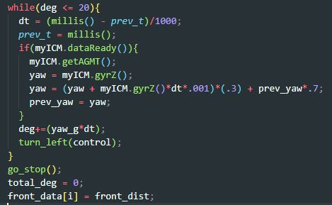
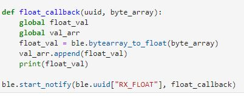
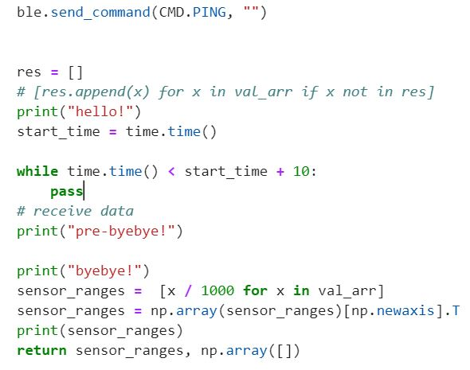
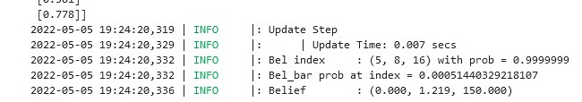
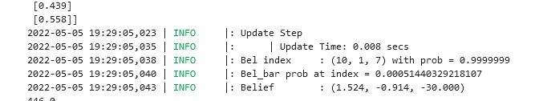
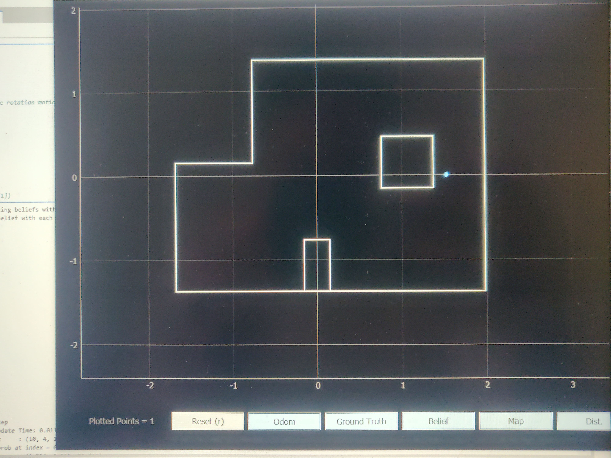

ECE 4960: LAB 12 - Grid Localization (Real)
Description
This lab consisted of completing grid localization as done in the simulator (see lab 11), but in a real environment. The same algorithms as described in lab 11 were used, but the sensor information passed to the algorithm to compute the pose was a set of 18 sensor measurements as measured by the robot in the lab.
Update Step
Considering how there is no robot motion involved in this lab, the prediction step of the Bayes Filter is not necessary for localization due to the lack of odometry information or pose change. It therefore only relies on the update step of the bayes filter, which takes sensor measurements as an input to compute the pose belief of the robot.
Robot Sensor Data
Since the sensor model of the Bayes Filter accepts an array of 18 real sensor measurements as an input, the step of retrieving this data and passing it to the jupyter notebook to compute the pose had to be completed. Considering how 18 sensor measurements were required, each measurement is spaced out equally by 20 degrees. The final output sent by the robot over bluetooth to the python host laptop are two sets of values: one set containing the angles, and the other containing the range measurements at that given angle. The environment in which the robot retrieves these measurements is pictured below:

Figure 1: Localization Map Environment
Artemis Range Measurement & Bluetooth Transmission
Considering how the first step of getting the localization update step to work was inputting good range information, the first step was to tune the Artemis code to collect readings every 20 degrees. This was done by conducting a while loop while checking for the change in angle, until it reaches 20 degrees. When the robot reaches a turn angle of 20 degrees, it breaks out of the while loop and adds the data to an array. This is repeated 18 times within a for loop. This is shown in the below code snippet:

Figure 1: Collecting angle data from the Artemis board
Once completed, the data needed to be sent over bluetooth to the server laptop. This was done by using the boilerplate provided Bluetooth class, to which new functions were added to send an array of values. In particular, 18 distance measurements were sent over bluetooth to the computer after each localization rotation. On the jupyter notebook side of things, sending data was implemented via a callback function, shown below:

Figure 2: Receiving data from the Artemis on the Laptop
On the Artemis side of things, a function was built off of previous float transmitting bluetooth functions to loop over an entire array and send values. This happens as soon as the car executes the full rotation.
Lastly, perform_observation_loop was updated to send the bluetooth command, wait for the robot to execute the rotation, and

Figure 3: Waiting for observation Loop Data
Results
Rotations
Below is a video of the robot executing the 360 degree rotation, and collecting measurements at 20 degree intervals. This same step was repeated over all five waypoints, but for brevity only one run example is shown:
Data collection rotation
Waypoints
We needed to localize at a series of waypoints in order to complete this lab. Those waypoints were:
-3, -2, 0deg
0, 3, 0deg
5, -3, 0deg
5, 3, 0deg
Waypoint 1: -3, -2, 0deg
The first localization waypoint was -3, -2 as shown with the robot position below:

Figure 4: Localization at -3, -2
Upon completing a full rotation, the position of the robot was estimated to be at -0.914m, -0.305m, i.e. -3ft,m -1ft. This means that the x-position localization was spot on, but the y-position localization somehow undershot by one foot. The reason for this is rather unknown, but it could be due to measurement noise or due to the partial wall that it sees in the positive y direction. This is shown on both images below:

Figure 5: Plotted Localization Result

Figure 6: Bayes Filter Localization Belief
Waypoint 2: 0, 3, 0deg
The next localization waypoint was 0, 3. Upon completion of the full localization rotation, the position was estimated to 0m, 1.219m, i.e. 0ft, 4ft. Similarly to the previous waypoint, the localization algorithm missed the y-localization but got the x-localization spot on. Although previously this was believed it might be preventDefault to a specific location on the map, this might be due to errors or noise in data collection since it seems to be persisting. This is shown below::

Figure 7: Plotted Localization Result for 0, 3

Figure 8: Bayes Filter Localization Belief for 0, 3
Waypoint 3: 5, -3, 0deg
The third waypoint for localization was at 5ft, -3ft. After completing the localization loop, the Bayes Filter returned 1.524m, -0.914m. This is equivalent to imperial measurements of 5ft, -3ft, meaning that the localization algorithm was able to locate the robot precisely.

Figure 9: Plotted Localization Result for 5, -3

Figure 10: Bayes Filter Localization Belief for 5, -3
Waypoint 4: 5, 3, 0deg
The last waypoint was 5ft, 3ft. Here, I unfortunately forgot to save the output of the bayes filter, so I relied on the saved mapping output to estimate the belief. From the plot seen below, the estimated belief is 0m, 1.6m, which is equal to imperial measurements of 0ft, 5.2ft. This is very far off from the true position of 5ft, 3ft.

Figure 11: Bayes Filter Localization Belief for 5, 3
- - - - - This concludes Lab 12 - - - - -